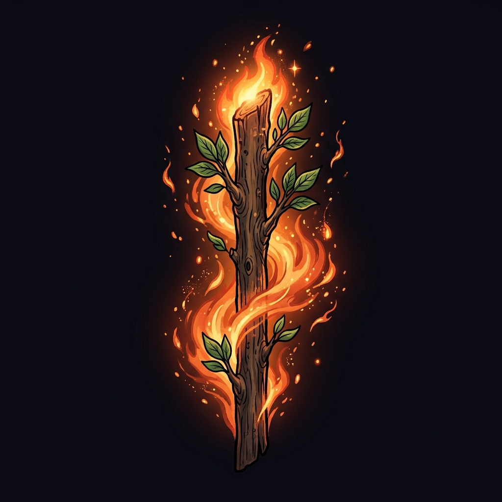
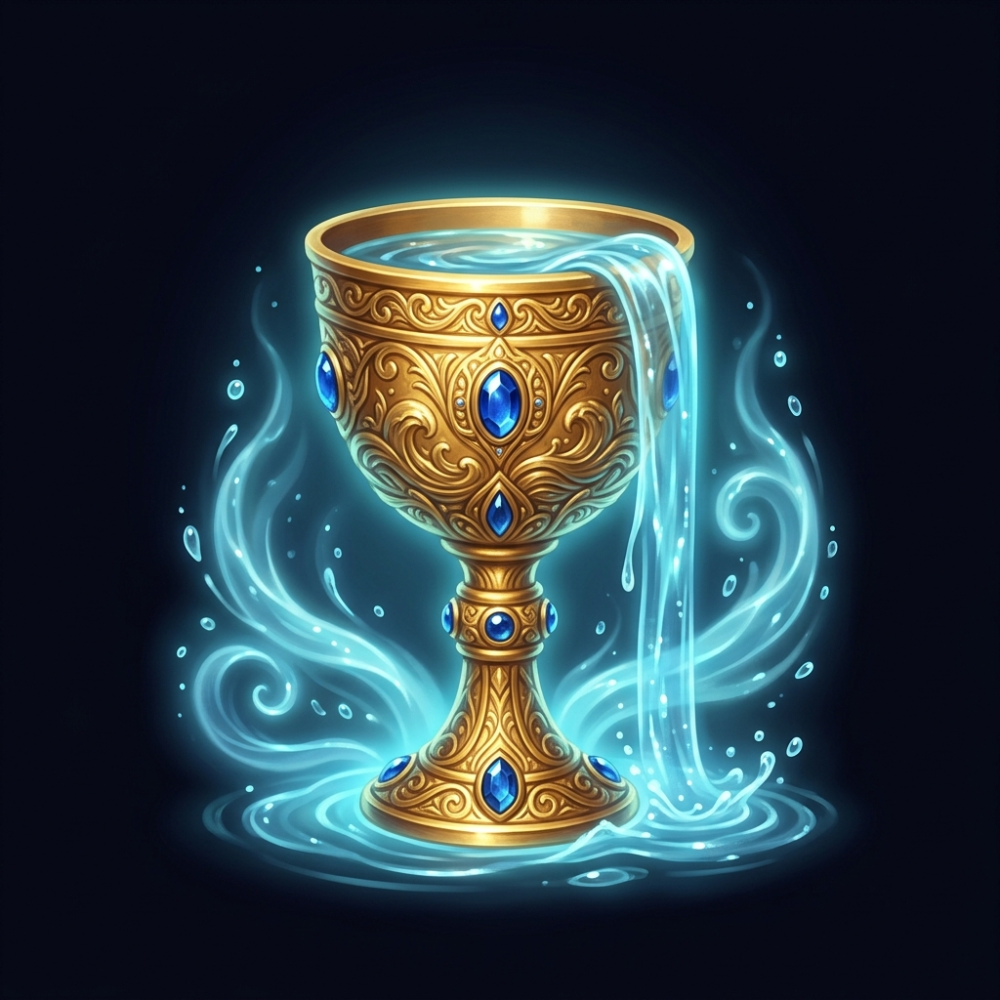
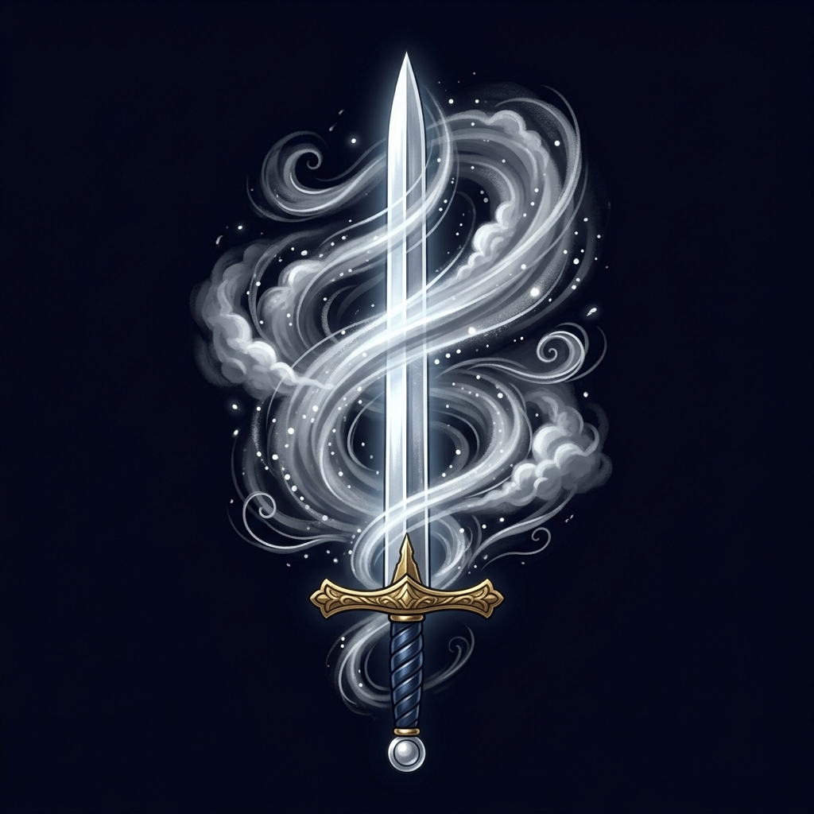
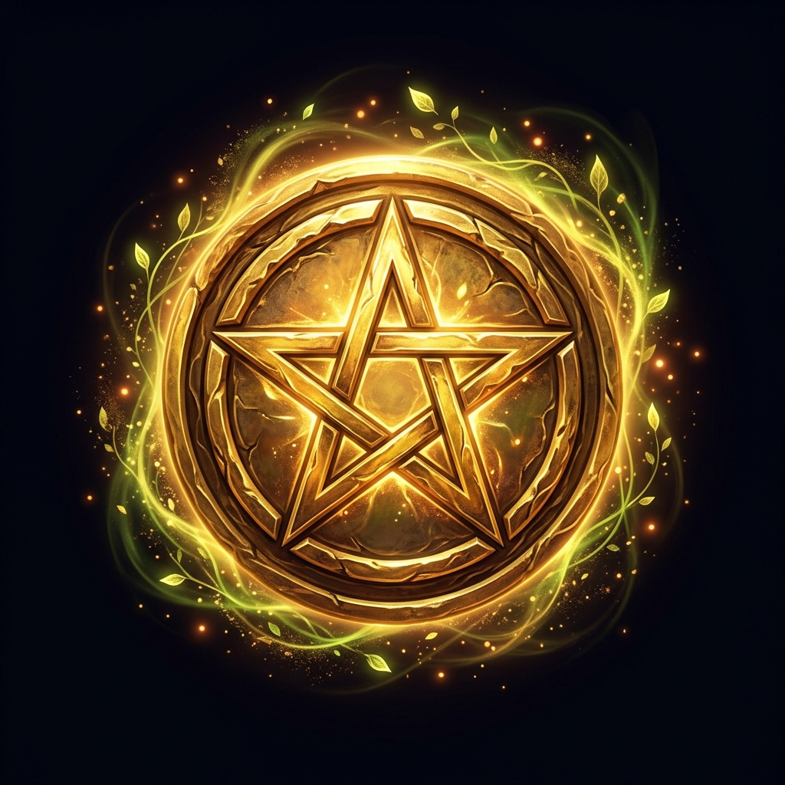
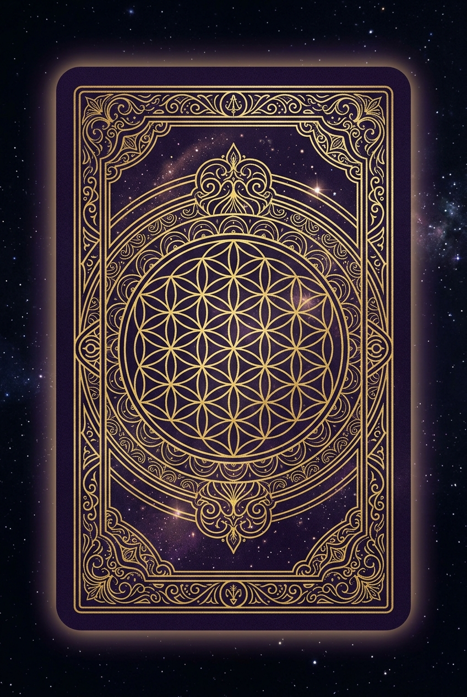

Principios de Lectura
El tarot como lenguaje simbólico, no como destino.
-
✧
La imagen primero: Antes de aplicar un significado, describe la escena: quién actúa, hacia dónde mira, qué sostiene, paisaje y qué está ausente.
-
✧
El contexto manda: Una misma carta cambia según la pregunta, la posición y las cartas vecinas.
-
✧
No hay destino cerrado: Una tirada muestra dinámicas, tensiones, recursos y direcciones posibles, no un veredicto.
-
✧
Las cartas difíciles no son "malas": La Torre, La Muerte, El Diablo señalan crisis, cierres, apegos o revelaciones necesarias.
-
✧
Invertidas opcionales: Si las usas, son bloqueo, interiorización, exceso, retraso o resistencia.
Ética y Límites
No usaremos el tarot para predecir muerte, enfermedad, embarazo, resultados judiciales, decisiones financieras o diagnósticos psicológicos. Si la consulta toca esos temas, la lectura se orientará a claridad, apoyo y decisiones responsables.
Gramática Simbólica
Colores
- Amarillo: Conciencia, claridad, energía.
- Rojo: Vitalidad, pasión, acción.
- Azul: Calma, interioridad, emoción.
- Blanco: Apertura, pureza, intención.
- Negro: Límite, misterio, lo no visible.
Paisajes & Objetos
- Montañas: Reto, distancia, logro, exigencia.
- Agua: Emoción, inconsciente, fluidez.
- Camino: Opciones, dirección, proceso.
- Flores/Jardines: Crecimiento, belleza.
- Manos: Acción, recepción, intercambio.
Los Arcanos
Explora el viaje de las 78 cartas del RWS.
Arcanos Mayores
Arcanos Menores
La lectura se vuelve precisa al cruzar: tema del palo + etapa del número + posición en la tirada.
Bastos (Fuego)
Acción, iniciativa, pasión, proyectos, deseo, conflicto energético. "¿Qué necesita movimiento?"
Copas (Agua)
Emociones, relaciones, intuición, vínculos, sanación. "¿Qué siento o necesito cuidar?"
Espadas (Aire)
Pensamiento, verdad, comunicación, decisiones, tensión mental. "¿Qué verdad o conflicto requiere claridad?"
Oros (Tierra)
Trabajo, dinero, cuerpo, hábitos, recursos, estabilidad. "¿Qué puede construirse o sostenerse?"

Catálogo de Bastos
Catálogo de Copas
Catálogo de Espadas
Catálogo de OrosEl Viaje Numérico
Del As al 10La progresión numérica representa las 10 fases evolutivas de manifestación de cualquier energía elemental en el plano terrenal:
Figuras de Corte
- Sota: Aprendizaje, curiosidad, noticia, inicio, exploración.
- Caballero: Movimiento, búsqueda, impulso, misión, energía.
- Reina: Dominio interior, cuidado, recepción, madurez emocional/intuitiva.
- Rey: Dirección, autoridad, estructura, responsabilidad, dominio externo.
Las figuras no deben asignarse automáticamente a género, edad o persona concreta. Son energías o etapas.
Lectura de Tarot
Estructuras de tiradas, relaciones entre símbolos y el arte de combinar cartas.
Estructuras de Tiradas
Una Carta
Uso: Reflexión diaria, claridad puntual.
Protocolo: Pregunta abierta ("¿Qué necesito observar hoy?") → Descripción visual → Núcleo → Aplicación práctica.
Tres Cartas
La tirada base para aprender relaciones entre símbolos.
Variantes: (Pasado-Presente-Futuro) / (Mente-Corazón-Acción) / (Yo-Relación-Dinámica)
Cinco Cartas
Útil para decisiones complejas.
- Situación actual
- Desafío principal
- Recurso interno (lo que tienes)
- Factor externo (entorno)
- Consejo o próximo paso
Cruz Celta
Para preguntas profundas cuando ya dominas tiradas breves. La posición 10 muestra la tendencia actual, no un hecho inevitable.
Cómo Leer Combinaciones
Método SintéticoAprender Tarot no consiste en memorizar parejas fijas ("Carta A + Carta B = Frase"). Las cartas son un lenguaje relacional vivo: la posición en la tirada asigna el rol o pregunta, y la interacción entre cartas crea la narrativa.
La Posición Asigna el Rol
En una tirada, una carta actúa como Sujeto (el tema o raíz) y la siguiente como Modificador (qué la desafía, estimula o resuelve).
Jerarquía Arquetípica
Distingue el peso de la lección vital frente a los hechos cotidianos según el tipo de arcano:
Alquimia de Elementos
Observa la compatibilidad entre los palos para entender la fluidez o fricción del mensaje:
Diálogo Visual y Miradas
En el estilo RWS, la orientación y gestos de los personajes aportan información directa sobre la relación:
Cómo Interpretar la Combinación Según la Posición
Tres ejemplos reales para aprender a tejer una respuesta coherente en lugar de leer cartas aisladas:
Combinaciones Frecuentes y su Lectura en Tirada
Explora cómo interactúan arquetipos clave según la temática de la consulta:
Amor y Relaciones
Dinámica: La elección moral y de alma (Enamorados) encarna en reciprocidad afectiva e intimidad real (2 Copas).
En Tirada: En Situación + Consejo: Comprométete sin miedo; la afinidad es mutua. En Desafío: Dificultad para formalizar por temor a perder la autonomía.
Dinámica: Colapso de una estructura falsa (Torre) que causa una herida punzante de lucidez y desengaño (3 Espadas).
En Tirada: Ruptura dolorosa pero inevitable que derriba una mentira. La recomendación es no aferrarse a los restos, hacer el duelo y priorizar el autocuidado.
Dinámica: Sanación y fe cósmica (Estrella) que alimentan un manantial puro de amor renovado (As Copas).
En Tirada: Superación de una sequía afectiva; momento idóneo para abrir el corazón a nuevas experiencias o reconciliaciones sinceras.
Dinámica: El apego, deseo posesivo o adicción (Diablo) disfrazados de satisfacción complaciente (9 Copas).
En Tirada: Alerta de autoengaño en la relación: placer efímero o vanidad que engancha pero no nutre el alma. Revisa si hay dinámicas de codependencia.
Trabajo y Finanzas
Dinámica: El talento, iniciativa y herramientas (Mago) encuentran una oportunidad física real para germinar (As Oros).
En Tirada: Oportunidad de oro para emprender o monetizar una habilidad. No te quedes en el plan mental: ejecuta de inmediato en el plano material.
Dinámica: La práctica constante y el amor al detalle (8 Oros) conducen a la maestría consolidada y la solvencia financiera (Rey Oros).
En Tirada: El esfuerzo metódico dará frutos duraderos. Señala ascenso, prestigio profesional alcanzado con sudor y excelente gestión patrimonial.
Dinámica: El exceso de cargas y compromisos (10 Bastos) exige una parada biológica y mental innegociable (4 Espadas).
En Tirada: Síntoma inequívoco de burnout o saturación laboral. Es prioritario delegar, fijar límites estrictos y descansar antes de que la salud te frene.
Decisiones y Encrucijadas
Dinámica: El bloqueo de la mente racional (2 Espadas) se resuelve acudiendo al silencio y la intuición oculta (Sacerdotisa).
En Tirada: Aún no es momento de actuar externamente ni de forzar una respuesta con la lógica. La información clave está madurando en tu interior; espera y medita.
Dinámica: Dirección decidida y control (Carro) multiplicados por velocidad fulgurante y sucesos rápidos (8 Bastos).
En Tirada: Señal inequívoca de avance sin titubeos. Los acontecimientos van a acelerarse; mantén el volante firme y confía plenamente en tu trayectoria.
Dinámica: La pausa contemplativa y entrega de perspectiva (Colgado) culmina en la transformación y cierre irreversible de ciclo (Muerte).
En Tirada: No resistas el estancamiento aparente. Es la gestación necesaria para soltar definitivamente lo que ya no tiene vida y permitir que nazca lo nuevo.
Crecimiento Interior y Despertar
Dinámica: La introspección y sabiduría madurada en soledad (Ermitaño) da paso al salto de fe libre de equipaje hacia una nueva etapa (El Loco).
En Tirada: El retiro interior ha cumplido su propósito. Ahora estás listo para lanzarte con inocencia y sin miedos a una aventura completamente nueva.
Dinámica: La llamada a despertar de conciencia y redención (Juicio) culmina en la máxima claridad, dicha y vitalidad (El Sol).
En Tirada: Liberación rotunda de viejas culpas o cargas kármicas. Apertura a una época de plenitud, éxito compartido y autenticidad transparente.
Tirada Online
Realiza una tirada real o practica tu lectura. Elige el tipo de tirada, baraja y consulta el significado de cada carta.
Elige tu Tirada
1 Carta — Consejo / Sí-No: Ideal para una respuesta directa. Formula una pregunta concreta y saca una carta. La carta te da la respuesta y el matiz que necesitas considerar.

Puedes tirar tantas veces como quieras. Cada tirada se guarda en el historial.
Historial de Tiradas
Aún no has realizado ninguna tirada. ¡Prueba el Laboratorio!
Plan de Estudio · 8 Semanas
Marca cada tema cuando lo hayas estudiado. Tu progreso se guarda automáticamente.
0% completado
Cómo usar el Diario
Después de cada tirada, anota en tu cuaderno siguiendo esta estructura:
- Fecha y pregunta exacta que formulaste.
- Tipo de tirada y posición de cada carta.
- Descripción visual inicial (sin consultar significados).
- Significado consultado (Núcleo y Sombra).
- Tu interpretación personal / síntesis.
- Una acción concreta o reflexión.
- Revisión posterior (vuelve días después a releer).
Consulta de Cartas
Busca cualquier carta por nombre para ver su significado completo. Ideal para interpretar tiradas físicas.
78 cartas disponibles